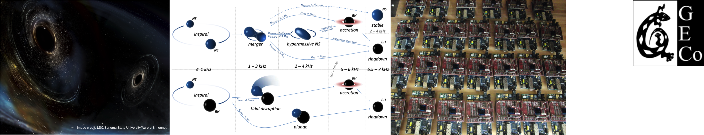
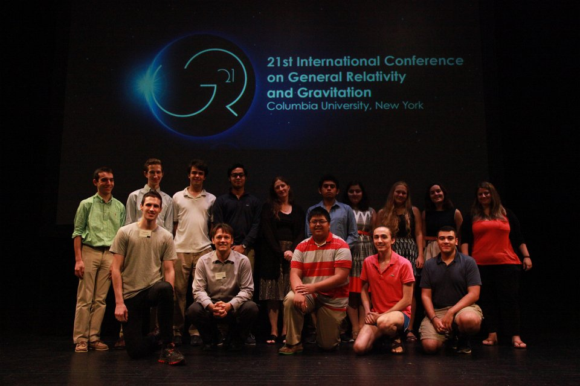

Group Members
Group leaders:
- Szabolcs Márka
- Zsuzsa Márka
Graduate students:
- Stefan Countryman
- Rainer Corley
Adjunct members:
- Luca Matone
- Tracy Huard (University of Maryland)
- Alexa Staley
- David Murphy (MIT)

Group photo taken during GR21 conference in 2016
Former Members
Former postdocs:
- Yoichi Aso (National Astronomical Observatory of Japan)
- Peter Raffai (Eötvös Loránd University)
Former graduate students:
- Maria Charisi (Caltech)
- Alexa Staley
- Max Factourovich
- Imre Bartos (University of Florida)
- Jamie Rollins (Caltech)
- Peter Kalmus (Jet Propulsion Laboratory)